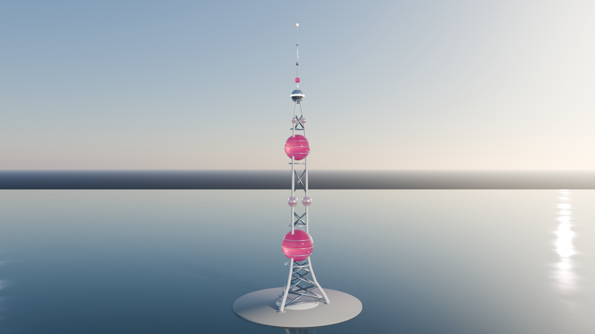
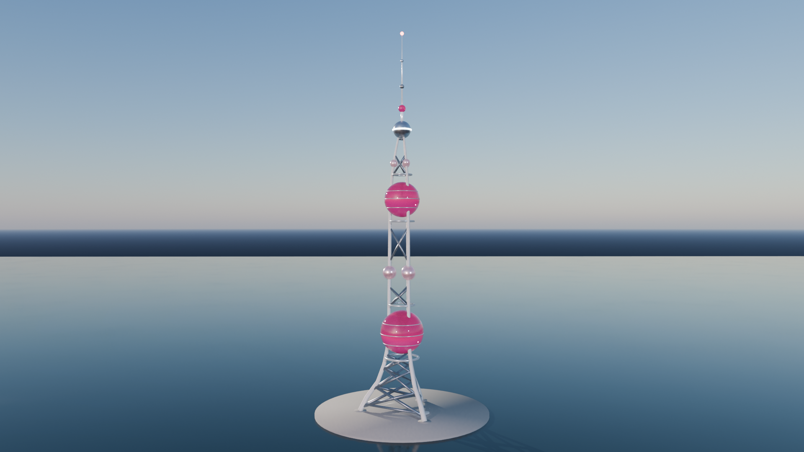

上海东方明珠广播电视塔
这座塔由 Blender bpy 脚本程序化建成，没有使用外部模型、素材或贴图。 下面的视频是 Eevee 渲染的一圈环绕：1920×1080，24 fps，共 240 帧，约 10 秒。
静帧


这座塔由 Blender bpy 脚本程序化建成，没有使用外部模型、素材或贴图。 下面的视频是 Eevee 渲染的一圈环绕：1920×1080，24 fps，共 240 帧，约 10 秒。

